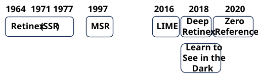
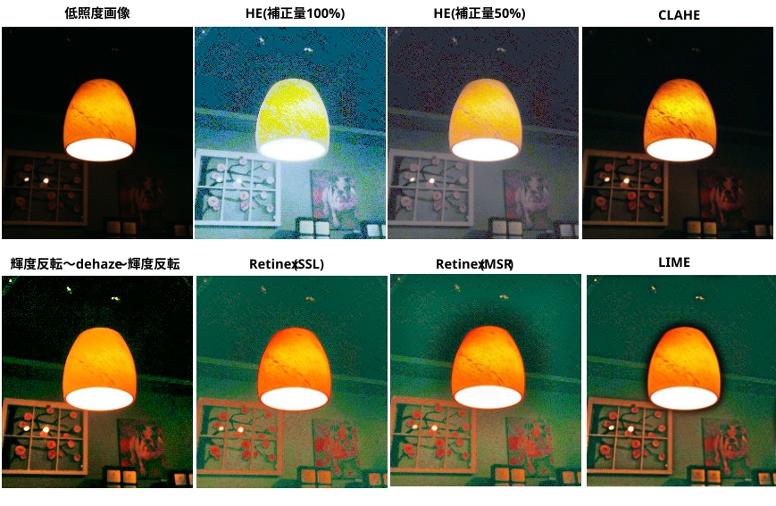
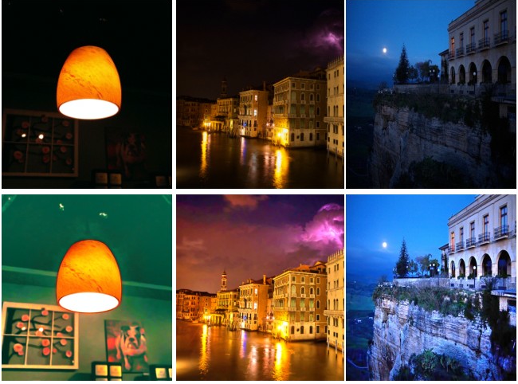
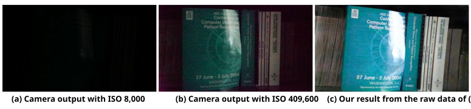

暗所や逆光などの光量が不足した環境で撮影された「暗く、ノイズが多く、色が不鮮明な画像・映像」を、人間やAIが認識しやすい「明るく、クリアで、自然な画像・映像」に変換・復元するタスク。

明るくすればいいだけじゃないの？という事で、思い付きの単純な手法でやってみると
・明るくならない
・無理やり明るくするとノイズが増幅される、色が不自然になる
という難しさがある。

※ 輝度反転～dehaze～輝度反転
『NIGHT VIDEO ENHANCEMENT USING IMPROVED DARK CHANNEL PRIOR 』 (2013)
低照度画像は輝度を反転するとモヤの掛かった画像のように見えるという思い付き手法。
dehaze の入力画像を 255 - 入力画像、dehaze 結果を 255 - dehaze結果、としているだけ。
予想外に効果があった。
(お試しコード)
・HE (補正量 100%)
data/task_image_enhancement/src/he_by_opencv.py
・HE (補正量 50%)
data/task_image_enhancement/src/simple_white_balance_by_he.py
トラックバー0: 150%, 50: 100%, 100: 50%, 150: 0%
・CLAHE
data/task_image_enhancement/src/clahe_by_opencv.py
・輝度反転～dehaze～輝度反転
data/dark_channel_prior/src/inv-dehaze-inv.py
・Retinex(SSR,MSR)
data/task_low_light_enhancement/src/lle_by_retinex.py
・LIME
https://github.com/Henry-GongZY/Low-light-Image-Enhancement
Code → Download ZIP
Low-light-Image-Enhancement-master.zip を解凍する
LIME.py があるフォルダに
data/task_low_light_enhancement/src/lle_by_LIME.py をコピー
pip install scipy
pip install opencv-python
pip install scikit-image
pip install tqdm
python lle_by_LIME.py (画像ファイル) [(iteration) (alpha) (rho) (gamma)]
Edwin H. Land（「ポラロイド」社の創業者）が提唱した理論。
人間が「物体の色や明るさを周囲の環境（照明光）に惑わされずに認識できる仕組み」を数理モデル化したもの。
照明に惑わされずに物体の本来の色や明るさを取得できる ⇒ 低照度画像の補正に活用できる
『The Retinex』 (1964)
Retinexという概念・言葉を世界で最初に世に送り出した論文。
「網膜（Retina）と大脳皮質（Cortex）が連携して色を決定している」という仮説を初めて提唱し、色の恒常性を説明しようとした初期段階のもの。
『Lightness and Retinex Theory』 (1971)
画像を「Illumination（照明光成分）」と「Reflectance（物体本来の反射率成分）」の積として分解する考え方を数式モデルとして定式化した。
※ 後で MSR： Multi Scale Retinex が登場するので、元のRetinex を SSR： Single Scale Retinex と記す。
\[
\begin{array}{l}
R_{SSR}(x,y)=\log I(x,y)-\log[F(x,y)*I(x,y)]\\
\\
・R_{SSR}(x,y)\text{：物体本来の反射率 ・・・ 照明に依存しない}\\
・ I(x,y)\text{：入力画像}\\
・ *\text{：畳み込み演算}\\
・ F(x,y)\text{：中心周囲関数(一般には単一のガウシアンフィルタ)}\\
F(x,y)=K・\exp\Big(-\frac{x^2+y^2}{σ^2}\Big) \\
K \text{ は } \int\int F(x,y)\;dx\;dy=1\text{ を満たすための正規化定数}\\
σ \text{ はスケールパラメータ}
\end{array}
\]
『The Retinex Theory of Color Vision』 (1977)
提唱から10年以上が経ち、理論と実験が完成された段階で発表されたRetinex理論の「集大成」。
NASAは宇宙探査や航空安全の過程で、「極端な明暗差」や「超低照度」の画像問題を解決する必要があった。
1990年代、NASAラングレー研究所（Langley Research Center）のシニア研究員であった ダニエル・J・ジョブソン（Daniel J. Jobson）氏 らのチームが、ランドの抽象的な視覚理論をベースに、コンピューターで処理できる具体的な数理モデルの開発に着手した。
『Properties of a center/surround retinex』 (1995)
『A Multiscale Retinex for Color Image Enhancement』 (1997)
Landの理論をデジタル画像処理アルゴリズム「MSR (Multiscale Retinex)」として実用化。暗い画像から照明成分を推定して除去し、ディテールを浮き上がらせる現代的LLEの直接の先祖となった。
これらによって、画像をシャープに明るくしつつ色も復元する「MSR (Multiscale Retinex)」や「MSRCR」という計算アルゴリズムが誕生した。この技術は「NASA Spinoff（宇宙技術の民間転移）」として民間に広くライセンスされ、現在のデジタルカメラやスマートフォンのHDR機能、そして低照度画像強調（LLE）の技術基盤へと繋がっている。
異なる \(σ_n\) を持つ複数の SSL を重み付け線形結合したもの。 \[ \begin{array}{l} R_{MSR}(x,y)=\sum\limits_{n=1}^N w_n・\big\{\log I(x,y)-\log \big[ F_n(x,y)*I(x,y)\big]\big\} \\ \\ ・ N\text{：スケール(ガウシアンフィルタ)の総数。 } N=3 \text{ が一般的}\\ ・F_n(x,y)\text{：固有の標準偏差 }σ_n\text{ を持つ }n\text{ 番目の中心周囲関数}\\ ・w_n\text{：各スケールの影響度を調整する重み}\\ \text{重みの合計は 1 になるように設定される } \sum\limits_{n=1}^N w_n=1 \end{array} \]
『LIME: Low-Light Image Enhancement via Illumination Map Estimation』 (2016)
Retinex 理論に基づき、ピクセルごとの「照明マップ」を高速かつ極めてシャープに推定する数理最適化手法を提案。ノイズを抑えつつ自然に明るくするアルゴリズムとして、当時の最高峰となり、現在でも軽量な実装が必要なデバイスの基準手法となっている。

『Learning to See in the Dark』 (2018)
「SID dataset」という、極限の暗闇で撮影したRAW画像と、長時間露光した綺麗な画像の「ペアデータ」を公開。これを用いてU-NetベースのAIを訓練することで、従来の画像処理の限界を遥かに超え、星明かり程度の暗闇からノイズのない鮮明なカラー画像を復元できることを証明しました。

『Deep Retinex Decomposition for Low-Light Image Enhancement』 (2018)
古典的なRetinex理論の「画像分解」のステップ自体をディープラーニング（CNN）に行わせる革新的なネットワークを提案。あわせて公開された「LOL dataset」は、今なおLLE研究のベンチマーク（標準評価データ）として世界中で使われています。
『Zero-Reference Deep Curve Estimation for Low-Light Image Enhancement』 (2020)
綺麗な教師画像を一切必要とせず、暗い画像を入力するだけで「最適な光度調整カーブ」をAIが自己学習する画期的なアプローチ。軽量かつ超高速なため、スマートフォンや防犯カメラなどのリアルタイム処理を大きく前進させました。